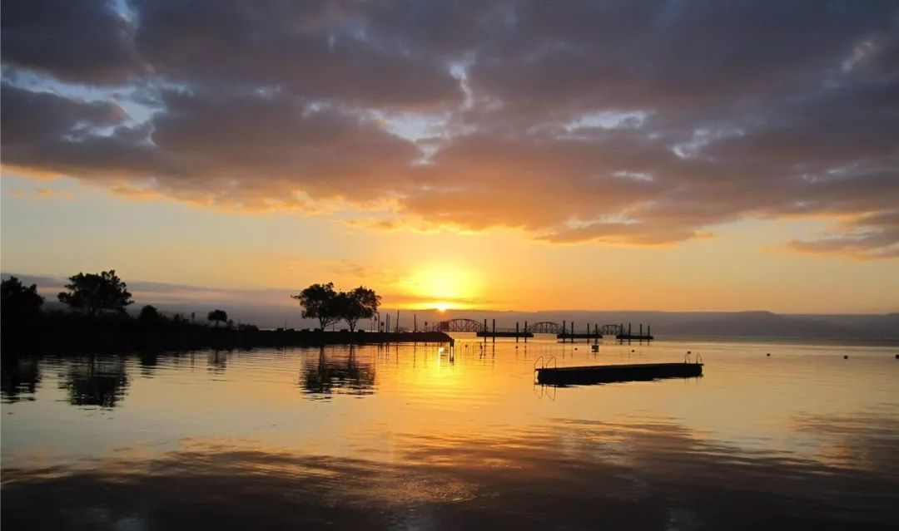
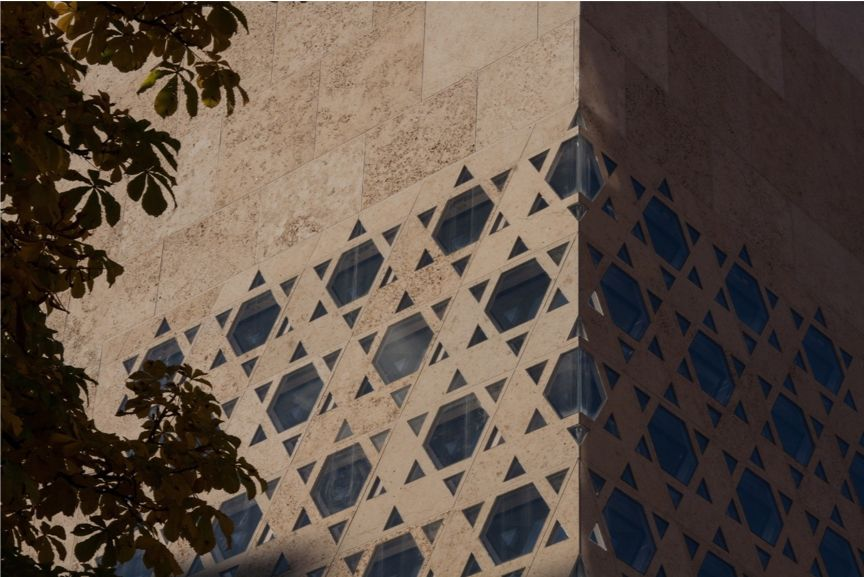
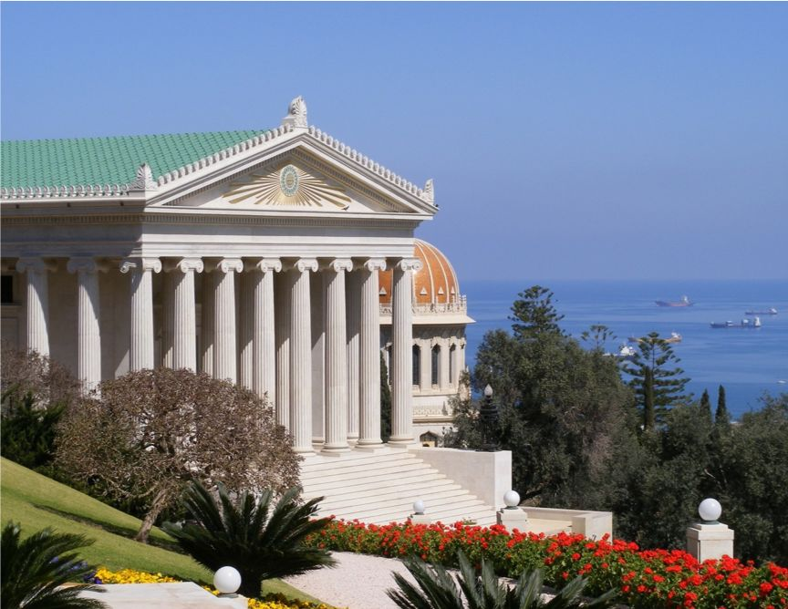
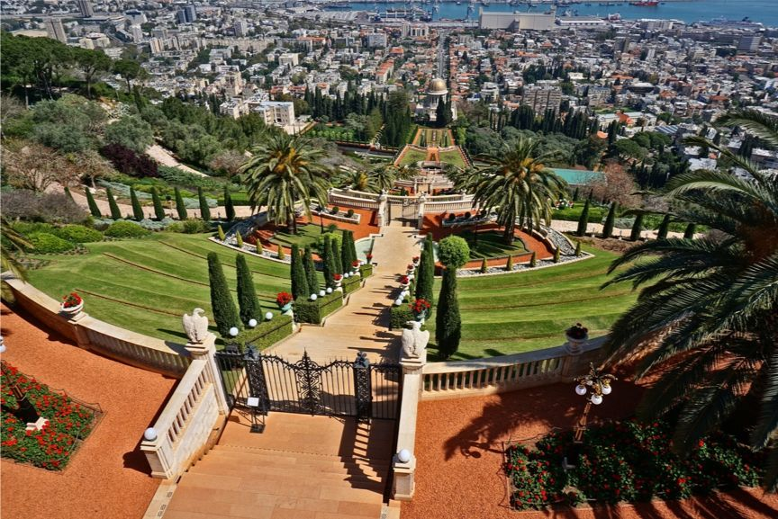
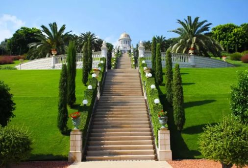
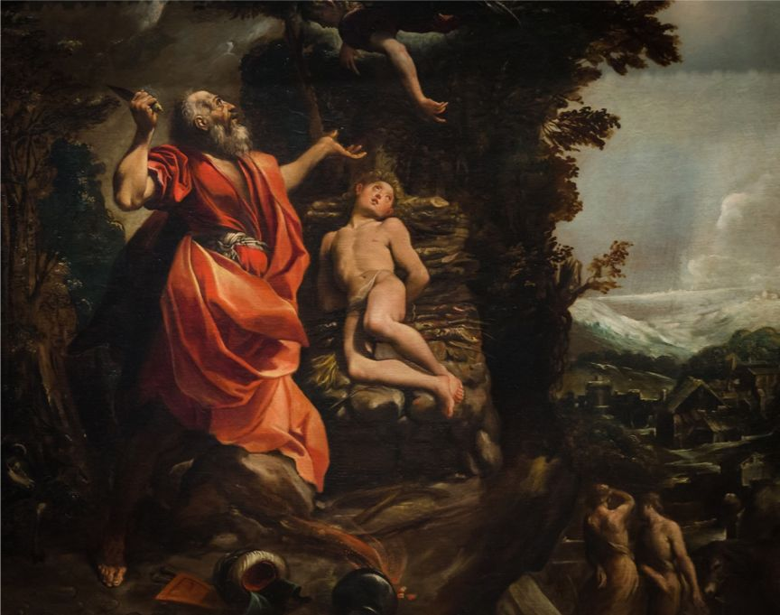
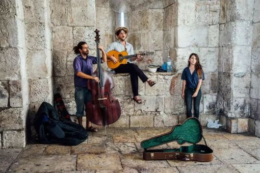
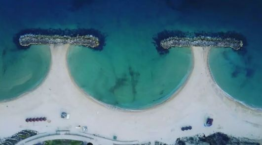
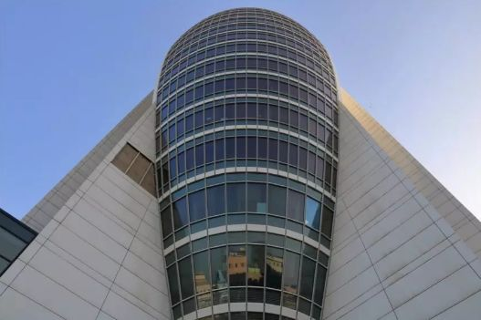

收录于合集

本信息由海国图智研究院委托国政学人转发推广
你心中的以色列是怎么样的？
经常有导弹从天而降？
与邻国关系恶劣？
是美国的小弟？
天生的商人？
你从哪里知道这些信息？
它们都是真实的吗？
这里——曾被视为世界的中心
神性与凡性的完美交织
处处窥见美丽的异国遗迹
了解耶路撒冷的历史
才明白世界为何演变至今日模样

这里——是上帝的“应许之地”
蓝天白云之间
黄沙高土之上
屹立在纷争中的灯塔
犹太人的玫瑰

这里——寄托着犹太民族两千年的悲愿
百年战争纷扰与三大宗教的演变
把这里涂抹的浓重且神秘
是怎样的坚韧和智慧
使新生的国家得以存续
这里——在极度贫乏中孕育出奇迹
被誉为下一个全球金融科技中心
也最可能成为技术引进的战略性窗口
你是否想过
有朝一日
用你的脚，和你的心
亲身感受这个陌生国度
验证对它的认知
项目介绍
为了促进中以交流，使中国学生更了解以色列，海国图智研究院与中以学术交流促进协会（SIGNAL）合作，推出海法大学暑期文化体验项目，全维度介绍犹太民族的历史文明，追寻亚伯拉罕的足迹，解读犹太民族历史文明，感受耶路撒冷三千年。
课程概要
学校简介

海法大学(University of Haifa)是以色列北部最大型的公立综合性研究型大学。学校位于以色列第三大城市海法，坐落在美丽的迦密山山顶，四周森林环绕，从校园俯视可领略到地中海迷人壮丽的景色。
课程优势

海法大学所提供的世界文化优势，以及令人目不暇接的国际化环境，吸引了许多想获得国际研究经历的学生。除了提供优质的高等教育外，海法大学致力于为各界人士提供平等的教育机会，多元化包容性的学习环境。
背景提升
全英文授课，英文水平全方位提高，并能够接触希伯来语；
独特的以色列学术经历，专家学者或业界牛人推荐信 ；
通过考核，可获海法大学颁发的项目结业证书。
学界认可
海国图智是新型社会智库，位居社会智库排行榜第五，自成立以来一直专注于国际问题研究，蜚声海外，近年来更致力于培养学生学术能力，帮助学生提高背景。
中以学术交流促进协会是一家旨在促进中以关系的非营利性机构，主要通过两国之间高层和学术交流来加强中国和以色列在战略、外交、文化以及经济方面的合作。
社交拓展
在海法大学暑期学习期间，你将有机会结识来自世界各地的学生、知识渊博的教授学者以及各类领军企业负责人，为将来的学术、工作发展积累广泛人脉。
社交体验
在海法，你将有机会与当地人互动、参加各种社会文化活动，品尝 Falafel, Tahini 等当地美食，感受多元文化，以及艺术的融合。

左右滑动查看更多
课程详情

1. The birth of a nation – Dr. Tal Elmaliach
通过对19世纪末至今100多年的历史回顾，描述和分析以色列政治和社会中的一些主要问题。
本课程共分为四个部分: 第一部分为1881年至1948年犹太复国主义运动的历史背景，重点介绍了作为新兴国家的叶休夫。第二部分考察了从1948年建国到1967年战争，以色列建国的过程，描述了大规模的移民和以色列民主的产生。第三部分是1967年至2000年以色列生活的“正常化”，这是伴随着战争和剧烈的政治变革而取得的巨大发展。第四部分考察了21世纪初以色列国家和整个犹太复国主义工程所面临的挑战。
•课程时间:7月8日–7月26日(3周)
•课时:每周 2 次课，8:30~15:45
•申请截止日期:2019 年 5 月 30 日
2. The history of modern Israel – Dr. Moshe Naor
该课程将研究巴勒斯坦犹太社区(伊舒夫)的社会、文化、安全和政治历史以及以色列国的最初几年。
涵盖从19世纪80年代初犹太复国主义运动开始到以色列独立第一个十年的时期，我们将探讨以色列国的起源、1948年后的国家建设进程和民族认同的建立，以及在这一形成时期从社区向国家过渡的影响。
课程时间:7月29日–8月16日(3周)
课时:每周 2 次课，8:30~15:45
申请截止日期:2019 年 5 月 30 日


申请条件
我们的项目强调国际化视野，如果你具备基本英语交流、阅读及学术写作能力，希望通过走进以色列更好地看世界，欢迎报名!
相比欧美路线，参与以色列暑期项目，你将有机会体验和参与以色列充满活力且有特色的创业文化和生态系统。

如何申请
7 July 2018
全日制在读高中生、本科生或研究生
具有一定英语基础的社会人士
请将中英文个人简历+相关语言成绩单(如:四六级/雅思/托福成绩单)
发送至邮箱 career@intellisia.org
邮件标题注明“海法大学+姓名”
*工作人员将会在收到简历后的 5 个工作日内，统一安排相关英语面试
产品与服务
费用包含
48000人民币/期，包含课程费用、住宿费用、签证费用、往返机票费用、医疗保险费用、文化体验及服务费。学员仅需自理餐饮费用及当地交通费用。
行前准备
帮助学员获得以色列领事馆 A2 学生签证;购 买以色列项目期间健康保险;为有需要的同学提供行前学术指导;与海法大学保持密切联系，保障学员的安全。
当地导游
项目包含当地 2 天导游，你将游览巴哈伊空中花园，海法迦密山等著名景点，也可以自由安排，游览耶路撒冷历史遗迹，体验漂浮死海自然奇观，徒步加利利湖畔或内盖夫沙漠。该项目支持学员走出课堂，通过实地观察更好地了解以色列、领略以色列的风土人情。
当地住宿
海法大学为学生提供两种宿舍房型，有机会跟 来自世界各地的学生建立长久的友谊:
•费德曼宿舍:三间共用浴室、厨房简约的双人间
•塔莉亚宿舍:六间独立卫浴，共用厨房的单人间
*可根据个人偏好进行选择。塔莉亚宿舍先到先得
  
左右滑动查看更多
联系我们
工作时间：9：30－18：00（工作日，节假日除外）
报名咨询：(0)20 3727 6476 梁老师/夏老师
联系邮箱：career@intellisia.org
广州市天河区潭村路348号马赛国际商务中心 2709室
更多阅读
【重磅速递】米尔斯海默：注定失败：自由主义国际秩序的兴衰 | 国政学人
【重磅推荐】巴里·布赞：英国学派视角下的中国崛起 | 国政学人
【美国研究】IS杂志：为何美国的外交大战略如此稳定？| 国政学人
国政学人 （ID：guozhengxueren)
为方便学人及时阅读高质量文章
别忘把国政学人设置 星标 哦~